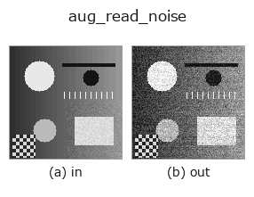

augmentation op• Data kinds: image → image
• Call: fullseye.apply(img, "aug_read_noise", a=0.5, b=0.5) (the 2-D model is one image plus two scalar knobs a,b∈[0,1])

*The figure is the real output on a synthetic 128×128 input. Left: input, right: output (a non-image return value is shown as the value itself).*
Additive Gaussian READ noise (amplifier + ADC noise), sigma-independent of signal (unlike shot noise). `sigma = 0.005 + 0.15*a. b mixes in a row-correlated component: a per-row bias of std 0.5*b*sigma` shared by the whole row, which is what a shared row amplifier / row-wise ADC produces (visible as horizontal banding). Seeded from (a, b).
• gallery2d_color_artistic family guide
• Sample-data catalog (download URLs / licences) — 2-D uses skimage.data (BSD/public domain) plus synthetic images; 3-D lists download URLs for real data sources (Stanford, PDS, …).
• Operator provenance and references — the sources of the research/methods this op family came from.
• The canonical algorithm (author, year) and its uses are named in the family usage guide above.
The program below has been verified to run (same input as the figure). In Studio's help this block becomes buttons that load and run it on the spot.
aug_read_noise 0.50 0.50
▸ Load this pipeline · Load & run
• gallery2d_color_artistic — py -3.11 examples/gallery2d_color_artistic.py
image as input)identity · gaussian · mean_box · bilateral · unsharp · median · min_filter · max_filter
augmentation)aug_shot_noise · aug_fixed_pattern · aug_motion_blur · aug_vignette · aug_chromatic · aug_rolling_shutter · aug_jpeg_blocks · aug_cutout
*Provenance: ops.py — 2D operator registry. This per-op note is generated by tools/opdocs.py md (do not hand-edit).*
© 2026 Kazufumi Furuse — Fullseye operator documentation. Licensed under Apache-2.0.